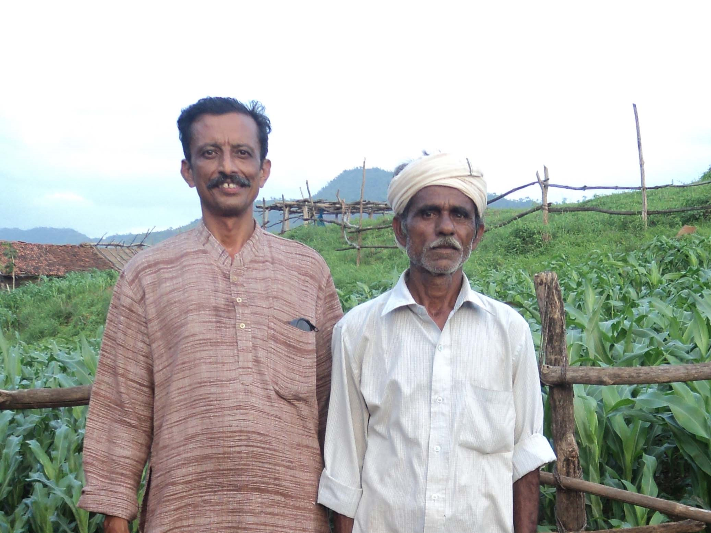
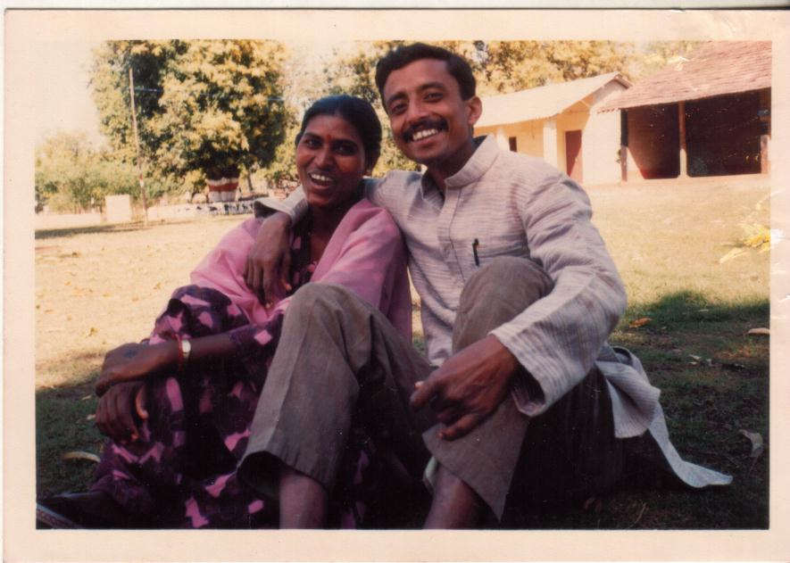
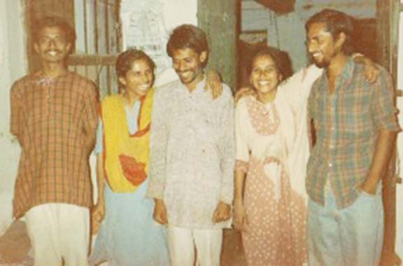
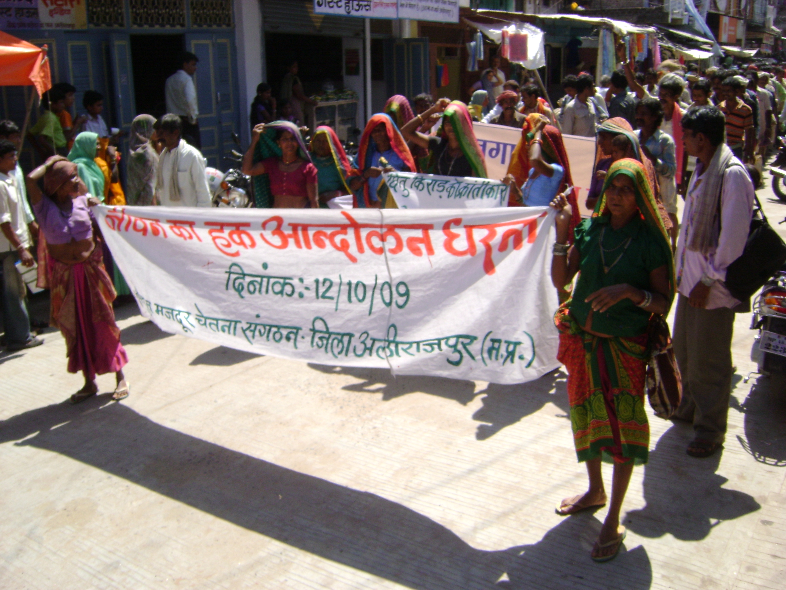
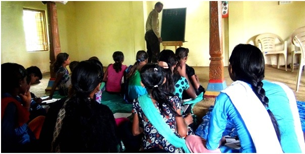
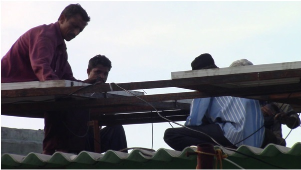

Rahul Banerjee is a social activist and development researcher. He works along with the Bhil Adivasis and
Dalits to synthesise their traditional qualities with modern skills and contribute to socio-economically
equitable and environmentally sustainable communitarian development as architects of their own future.
Through the organisations Khedut Mazdoor Chetna Sangath, Dhas Gramin Vikas Kendra, Dhas Gramin Vikas Kendra,
a public trust and Mahila Jagat Lihaaz Samiti, a registered society, he has along with others participated
in promoting and preserving the knowledge, livelihoods and culture of the Bhils and Dalits and countered
their internal patriarchy over a period of three decades using mass mobilisation, policy advocacy, media
advocacy, research, project implementation and legal action.
He has thus tried to Make Sense of Development in these troubled and confused times.
 Rahul Banerjee was born in Kolkata and did his early schooling at La Martiniere Calcutta. After completing Higher Secondary from the same school, he joined Indian Institute of Technology Kharagpur in 1978 for pursuing Civil Engineering. He later obtained a PhD in Environmental Planning and Management in 2013 from CEPT University, Ahmedabad. An important event in his life came in 1982, while still in college during a conversation with poor Adivasi bullock cart drivers carrying hay to the market convinced him that his IIT education was irrelevant for the wellbeing of Adivasis and turned him towards a life of activism. He is married to Subhadra Khaperde who is a Dalit Feminist Activist.
He has worked voluntarily as a social worker since 1983, after graduating from college. He has worked with the Adivasis who are the most deprived among the poor in India. Initially he worked for the education of Adivasi children in West Bengal. He then joined Social Work and Research Centre in Tilonia, Rajasthan to work on appropriate housing technologies in 1985. However, a month later he met two people who had gone from Tilonia to work among the Adivasis in Alirajpur district in Madhya Pradesh and came along with them to work with the Bhil Adivasis. Those were the days when the rhetoric of participatory rural development was at its height and policy advocacy had not yet made its presence felt. So along with his colleagues Khemraj Choudhary, Amit Bhatnagar, Khemla Aujnaharia and Shankar Tadwal, he began work in the areas of Adivasi rights to forests, land and water, and development work in primary education, primary health, watershed development, joint forest management, formation of self help groups, sustainable agriculture and promotion of traditional water harvesting techniques. Banerjee and his colleagues have worked to establish socio-economic and environmental justice in Madhya Pradesh and India.
 This is the first trade union of Bhil Adivasis working for rights and consciousness and has fought many battles both through mass protests and legal action. This organisation has secured the rights of the Adivasis to the forests and has been a member of the coalition, Campaign for Survival and Dignity, to enact the law for the same - The Scheduled Tribes and Other Traditional Forestdwellers (Recognition of Rights) Act. Once this Act, popularly known as the Forest Rights Act, came into force in 2007, the organisation worked actively for its implementation and has ensured forest rights for over 10,000 Adivasi families in one of the best implementations of the Act in India. This is the important work for which its sister NGO Dhas Gramin Vikas Kendra was awarded the Times of India Social Impact Award in 2011. The organisation has taken legal action to provide compensation to victims of atrocities perpetrated by non-Adivasis. The organisation has also taken the Government of India to the Supreme Court of India on two occasions and landmark judgments have resulted from these legal actions. One that provides that undertrial prisoners will not be handcuffed and another that has provided substantial monetary compensation to victims of silicosis contracted from working without protection in stone crushing factories. This organisation also participated actively in the struggle against the Sardar Sarovar Dam being built on the River Narmada. It is also an active constituent of the Adivasi Ekta Parishad which is a national forum fighting to establish the rights of the Adivasis in India. The organisation is a non-hierarchical one based on grassroots democracy and has acted as a nursery of activism as many other activists who have worked with it have later gone on to contribute to the fight for justice elsewhere and to development scholarship and journalism in India and abroad like Aruna Roy, Nikhil Dey, Pushpendra Solanki, Chittaroopa Palit, Jayashree Bhalerao, Bernadette D’Souza, Anita Bharatiya, Vidya Shah, Ashwini Chhatre, Amita Baviskar, Deshdeep Sahadev, Kemat Gawle, Shashank Kela, Karuna, Narendra Patil, Alok Agarwal and Ravi Hemadri.
 Collective action for management of common pool resources has come to be acknowledged as a sine qua non not only for their conservation but also for ensuring sustainable livelihoods along with mitigation of climate change. The traditional communitarian labour pooling practices of the Bhil Adivasis have been revived and promoted to strengthen collective action and women have been in the forefront of such activities. Projects of Joint Forest Management, Wasteland Management and Watershed management have been carried out in over thousands of hectares which have substantially increased the forest cover and soil and water availability for the Bhil Adivasis. Traditional water harvesting practices have been revived and popularised.

Through the Adivasi Riti Badhao Tola, Rahul Banerjee, has promoted the Bhili language and culture.
Historically a major medium for the positing of a strong identity by any community has been its language.
All literate cultures have thrived by developing a rich literature to strengthen their language. However,
adivasi cultures, being non-literate have not been able to do this and so have fallen behind and face
extinction. The Bhils have a rich oral cultural heritage with their creation myth, which is sung in night
long celebrations, being a paean to the power and beauty of nature. The Bhil world view is one of humility
wherein the human being is a minor cog in the grand scheme of nature.
A conscious process of cultural
revival and the creation of a new literature, plays and songs from the classical oral folklore of the Bhils
has been used as a crucial DEVELOPMENTAL TOOL to help a non-literate community like that of the Bhil
Adivasis to improve their articulation and self esteem and so better their socio-economic condition in fair
competition over the "developmental cake" with other more well endowed communities. This stress on reviving
and promoting indigenous culture is also carried over to providing education to Adivasi children in schools
in their own language and in the richness of their own culture.
 He has considerable experience in urban water and energy management and has developed a very cost efficient household system that harvests and recharges all the rain water and also treats and recycles all the wastewater while also using natural techniques of cross ventilation and green cover to save on cooling costs. He has also implemented a solar energy system wherein during the day energy is exported into the electricity grid while during the night energy is imported from the grid for a net export of renewable energy thus reducing the carbon emissions from the house and also contributing to overall emission reduction.
Rahul works these days in association with his wife and activist Subhadra Khaperde in the important areas of renewable energy, women's reproductive health, natural resource conservation and sustainable agriculture primarily in Madhya Pradesh. He has coined a new term "Survival Edge Technology" for the combination of appropriate technologies in natural resource conservation, sustainable agriculture and renewable energy and their implementation through collective action that he is engaged in so as to counter the fascination with centralised cutting edge technologies that have created the agriculture, water, energy and climate crises.
Banerjee has argued that the centralised production and distribution of electrical energy in India has become economically and environmentally unsustainable and so he advocates a switch to decentralised production of energy involving anaerobic incineration of biomass, biomethanation, solar energy and wind power as a more appropriate strategy for India. In pursuance of this he has through his organisation Mahila Jagat Lihaaz Samiti implemented decentralised renewable energy projects in solar power generation.
He has along with his wife Subhadra and other activist women formed the organisation Mahila Jagat Lihaaz Samiti (MAJLIS) to address the gynaecological health of poor women. Majlis conducts an intensive communitarian programme of reproductive health intervention which involves surveys, group discussions, workshops, clinics, laboratory testing and distribution of medicines.
Banerjee asserts that there is a dire need for reorienting agriculture towards natural sources and making it sustainable in environmental terms. Through the Mahila Jagat Lihaaz Samiti, he has initiated a programme of natural resource conservation and sustainable agriculture with the use of in situ farm inputs and the promotion of indigenous seed varieties through the Survival Edge Technology Centre in Pandutalab.
Banerjee has formulated his own school of thought and action which he terms anarcho-environmentalism. According to him it has the following postulates - Nature is paramount and so humans must live in harmony with nature. Human organisation must be in line with Anarchist principles of stateless communities based on direct democracy and minimal individual property accumulation. Women must be equal participants with men in all decision making and action. Unarmed Mass action is required on the ground to establish an anarcho-environmentalist civilisation. Unarmed because armed struggle is not possible by anarchist groups against the centralised and heavily armed modern state.
He has been awarded the Distinguished Alumnus Award by his alma mater Indian Institute of Technology, Kharagpur in 2019 for his service to society. His NGO Dhas Gramin Vikas Kendra won the Times of India Social Impact Award in 2011. He has been a fellow of the MacArthur Foundation, U.S.A., Ashoka Foundation, U.S.A and the Centre for the Study of Developing Societies, India. He has been an active participant in various mass movements like, Khedut Mazdoor Chetna Sangath, Narmada Bachao Andolan, Bharat Jan Andolan and Adivasi Riti Badhao Tola. He has carried out many research and implementation projects in several areas of development for such agencies as the World Bank, United Nations Development Programme, Department for International Development U.K., International Water Management Institute, Bill and Melinda Gates Foundation, Sir Dorabjee Tata Trust, The Hunger Project, Edelgive Foundation, Action Aid and others.